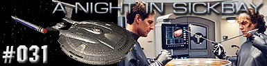
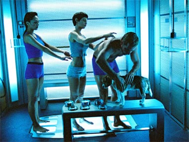
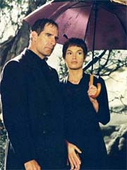
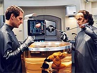
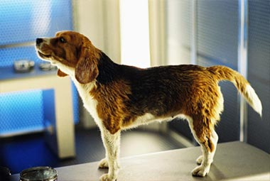
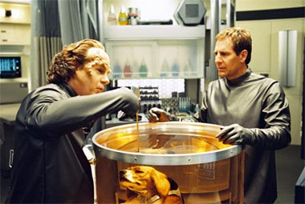
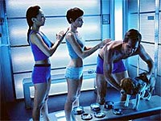

|
Enterprise
Temporada 2

Anlise do episdio por
Salvador Nogueira



|
Catstrofe e Comdia ficam na mesma pgina do dicionrio de Berman & Braga Episdio anterior | Prximo episdio Um grupo avanado composto por Archer, T'Pol, Hoshi e o cozinho Porthos volta de uma frustrada misso diplomtica no mundo natal Kreetassano. No bastasse o fracasso das negociaes, o capito ainda tem que se conformar com o fato de seu cachorro ter adquirido um patgeno que no pde ser eliminado nem mesmo aps o processo de descontaminao conduzido pelo dr. Phlox.  O mdico diz ao capito que seu co precisa ficar mais na enfermaria, mas os outros trs esto liberados. Cada um volta aos seus afazeres, e Archer vai at a engenharia contar a Trip que fracassaram as negociaes para a obteno dos injetores de combustvel que a Enterprise precisava. A nave atualmente est com cinco dos seis funcionais. Archer insiste que possvel manter a nave funcionando com cinco deles, mas Trip lembra que eles podem ficar deriva se mais um quebrar e eles no tiverem obtido uma substituio -- o que pode no acontecer logo, uma vez que nem todos tm peas to compatveis com os sistemas da nave como os Kreetassanos. Apesar disso, irritado pela forma como foi tratado no planeta, Archer no parece disposto a voltar s negociaes. Para comear, ele nem sabe o que foi que ofendeu os Kreetassanos desta vez. E seu humor no melhora nada quando ele volta enfermaria e informado pelo doutor Phlox de que seu cozinho no vai nada bem -- o parasita que o infectou est minando seu sistema imunolgico. Phlox est aplicando um tratamento, mas no sabe se ele ter sucesso. Depois de voltar a seus aposentos, Archer sente a falta de Porthos e acredita que talvez seja melhor ele passar a noite na enfermaria, ao lado de seu co. L, ele recebido por Phlox e ocupa uma das camas de pacientes. Mas as atividades do doutor (como cortar as unhas e esticar a lngua) acabam impedindo o capito de dormir. Ele decide ento ir sala de ginstica da nave para se exercitar. L ele encontra T'Pol, tambm fazendo corrida em uma esteira. Os dois comeam a conversar, e a Vulcana logo deixa claro que no aprova a postura do capito, colocando seu co acima de sua nave na lista de prioridades. Archer comea a se comportar de modo cada vez mais agressivo para com sua primeiro-oficial, por motivos pouco compreendidos. Mas ambos so interrompidos por Hoshi, que diz que os Kreetassanos contactaram a Enterprise para oferecer a lista de exigncias deles para que perdoem a tripulao humana.  Aparentemente, eles ficaram ofendidos depois que Porthos fez xixi em uma de suas rvores sagradas, mas Archer no est muito tocado pela situao. O capito se recusa a participar do estranho ritual de desculpas exigido pelo protocolo Kreetassano.Na enfermaria, as coisas vo de mal a pior. O tratamento original desenvolvido por Phlox no funciona, e a vida de Porthos passa a estar ameaada. O doutor vai tentar um tratamento alternativo, mas, como com o primeiro, no h garantias de sucesso. Archer fica ainda mais frustrado e reage com violncia ainda maior quando T'Pol vem falar com ele. O doutor, dando uma de psicoanalista, reconhece em Archer o comportamento de algum que est tentando reprimir um desejo sexual inconsciente por sua oficial de cincias. Ele tenta convencer o capito disso, mas Archer se recusa a acreditar nas observaes de Phlox. Apesar disso, seus sonhos dizem outra coisa. Ao cair no sono, Archer sonha que est no funeral de Porthos, acompanhado por T'Pol, e onde Phlox o padre. L, o capito e T'Pol se do as mos, em meio tarde chuvosa, num claro sinal de intimidade. O sonho ento salta para a cmara de descontaminao, em que Phlox diz que Hoshi e Porthos podem sair, mas T'Pol e Archer precisam ficar l um pouco mais. Sozinhos, os dois comeam a se acariciar de formas "no-protocolares", terminando num beijo. Em meio a esse sonho, Archer acordado por um alarme na enfermaria: o tratamento de Phlox mais uma vez est falhando. A nica alternativa que resta ao doutor tentar um transplante de hipfise, trocando a de Porthos por uma de uma lagarta que ele mantm na enfermaria. Quando o mdico revela que nunca fez isso antes, Archer ameaa no deixar ele seguir com o procedimento, chegando at a ofender o Denobulano. Um pouco mais calmo, instantes depois, ele concorda com o procedimento e pede desculpas a Phlox pela exploso. O mdico ento comenta com Archer que T'Pol havia dito que ele era incapaz de pedir desculpas. O pensamento faz com que o capito reconsidere sua deciso de no se desculpar com os Kreetassanos. Enquanto Phlox trabalha para salvar seu co, ele vai superfcie e realiza o ritual exigido pelos Kreetassanos para compensar pelas ofensas anteriores. A ao bem-sucedida e Archer consegue dos aliengenas os injetores de combustvel que a Enterprise precisava.  De volta Enterprise, Archer pede desculpas a T'Pol por sua aspereza anterior, ressaltando que tais conflitos so inevitveis, especialmente se os dois oficiais so de sexos opostos -- sem dvida ecoando as observaes iniciais de Phlox. Para a surpresa de todos, T'Pol apenas concorda, dizendo que ambos precisam trabalhar para evitar que se envolvam pessoalmente e dando a entender que a tenso entre os dois recproca.Na enfermaria, Archer descobre seu cozinho recuperado e pronto para voltar a seus aposentos.
Comentrios:  Depois, temos mais da infame cmara de descontaminao -- uma desculpa gratuita e pouco cientfica para mostrar os rapazes sem camisa e as moas em blusas curtinhas e com as coxas de fora. Para completar o quadro, Archer parece uma criana ao longo de todo o episdio, incapaz de eleger suas prioridades e assumir sua posio de capito por ter ficado magoado com o descaso dos Kreetassanos para com seu cachorro. E como se no bastasse, os produtores tiram da cartola uma tenso sexual entre Archer e T'Pol, algo que no suportado por nenhum episdio anterior da srie e que provavelmente no vai voltar a aparecer to cedo. S para no dizer que o episdio 100% lixo, vale destacar a nica atuao realmente digna de nota: a de John Billingsley, como Phlox. Apesar de o roteiro simplesmente demolir a dignidade do bom doutor (indo desde observaes sem sentido, como a sobre a tenso de Archer com relao a T'Pol, at o uso do personagem como palhao, com um lquido gosmento caindo sobre ele, sem falar nas infames cenas da lngua esticada e das unhas nojentas), Billingsley consegue imprimir tamanha personalidade que, apesar de todos os esforos dos produtores em contrrio, ainda sou capaz de respeitar Phlox. Todo mundo sabe, desde o princpio, que os produtores queriam colocar mais sexo nessa srie do que nas anteriores. Honestamente, no tenho nada contra isso, contanto que seja feito para desenvolver os personagens, no em detrimento deles. No caso de Archer e T'Pol, a sugesto de tenso sexual fez muito mal aos dois (alm de simplesmente no fazer o menor sentido!). Quando sentimos a sensualidade entre T'Pol e Tucker em "Broken Bow", eu achei potencialmente interessante, mesmo que gratuito. A mesma coisa valeu para os desejos reprimidos de Reed, revelados em "Shuttlepod One". Mas aqui, o uso de Archer totalmente inapropriado e vai contra tudo o que vimos nos episdios anteriores. Ao que parece, os produtores tm essa necessidade de dizer que todos os tripulantes babam por T'Pol -- o que, por si s, no traz nada de bom srie. Dessa vez eles perderam feio.  Para completar a desgraa, T'Pol reconhece tacitamente algum interesse por Archer, algo ainda mais impensvel do que o contrrio. De onde Rick Berman e Brannon Braga tiraram essa idia? Mudando de assunto, mas seguindo com o tom: tenho certeza de que muitos dos telespectadores sabem o quanto uma pessoa pode amar seu animal de estimao. Eu respeito isso e acho que muitas das cenas do episdio expressaram de forma adequada esse sentimento. Mas esse homem o capito da mais importante nave espacial da Terra! Sua preocupao maior deveria ser de transmitir uma boa impresso dos humanos a outras raas aliengenas! Mas quando uma delas se ofende, ele est mais preocupado com seu co (que no tinha nada que estar em uma misso diplomtica!) do que com as relaes entre humanos e Kreetassanos. Por esse comportamento, s posso supor que ele ganhou o cargo de capito numa rifa ou algo do tipo...  A pssima qualidade do roteiro e do enredo contrasta com os belssimos efeitos visuais digitais, como a lngua comprida de Phlox -- que extremamente bem feita -- ou seu morcego de estimao (pena que as duas sequncias sejam patticas ao extremo).A direo de David Straiton no faz nada mais que a obrigao, sem grandes inovaes ou qualidades. Os atores fazem o que podem -- o que no muito, diga-se de passagem --, dada a qualidade do roteiro. Infelizmente, "A Night in Sickbay" capaz de demolir todo e qualquer esforo anterior da produo em dar a Archer uma personalidade definida e, de preferncia, uma que pudssemos admirar. Phlox tambm no se sai bem da enrascada, e o que menos compromete essa aberrao que os produtores chamam de episdio Porthos -- felizmente no h nenhuma cadela Vulcana a bordo.
Archer - "You know, this isn't some guinea pig you're working on here. This is Porthos, my beagle, my pal. And from what you're telling me, the closest thing your people have to pets are furry little things that go well with onions."
Escrito por Rick
Berman & Brannon Braga Elenco: Scott
Bakula como Jonathan Archer Elenco convidado: |